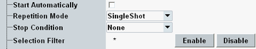

The selftest measurement is configured using the parameters at the beginning of the "Selftest" section in the "Setup" dialog.

Starts the selected selftests automatically when the R&S CMW software is started next time (service feature).
Defines how often the selftest measurement is repeated if it is not stopped explicitly or by a stop condition "Halt on Failure".
- In "Continuous" mode, all selected selftests are repeated until the selftest is explicitly aborted; the results are updated after each test cycle: The R&S CMW performs a long-term test.
- A "Single Shot" measurement is stopped after all selected tests have been completed. This mode is appropriate for verifying the correct functioning of the instrument.
Specifies the conditions for an early termination of the selftest measurement.
"None" | All selftests are executed according to the selected "Repetition" mode, irrespective of their state. |
"Halt On Failure" | Test execution is stopped when one of the selected selftests has reached the "Failed" state, irrespective of the repetition mode set. If none of the test fails, selftest execution is continued according to the selected "Repetition" mode. |
Enables or disables a particular selftest specified via its name. To enable or disable groups of selftests, use the wildcards ? (single character) and * (any character).
As an alternative to the selection filter, use the "Enable/Disable All" or "Enable/Disable Subtree" hotkeys.
Selects all or a current group (subtree) of selftests for execution or clears the current selection.